Isabelle Bidou's dance Bio
Isabelle studied to become a FatChanceBellyDance® Sister Studio, a tribal bellydancer and was a member of Suadela Bellydance.
As a little girl She loved dancing, she loved how it felt to let go of the body completely, let it take over completely and let it speak... She never missed a chance to indulge, she loved dancing rock with her dad also. At the age of 6 she took classes of ballet. The teaching was all about posture, control and drilling. That went on for a couple or years. As a teenager she took classes of Modern Jazz where she learnt a lot about conditioning, body awareness, spinning, and memorising choreographies to a clocksmith perfection. That went on for three years. Something essential was missing and the frustration convinced her that may be she was not dancer material after all, she came to hate choreography and her body felt trapped in so much discipline and perfection. Dance was not what she thought it was.
And then what? Life happened and a succession of mortifying years of sedentary ocupations in the pursuit of career success in a competitive world.
She found her tribe in 2014 at a time when she had lost confidence in her body. After a few classes with Suadela Bellydance she knew she had just opened the door to infinite possibilities. She learnt that a community can be the most supportive and nurturing and thrive better than any competitive environment. Success is not about being better than others but better with others. And yes! Dance can also be what she thought it was as a kid. Dance was the reason she was on this planet, she remembered that this truth had been obvious to her as a kid and she just had forgotten it growing up.
She fell in love with ATS® and it became her main focus because she was fascinated by its international dimension and the fact that the vocabulary, syntax and format was readily understood worldwide making it possible to start dancing with any dancer with a basic knowledge of the style anywhere.
She left her corkonian dance coccoon for some dancing adventures overseas and attended a number of ATS® intensives and workshops in Warsaw, Rome, Viareggio, Valladolid and Dublin to study with FCBD dancers such as Kae Montgomery, Kristine Adams, Sandi Ball and Kelsey S. Suedmeyer.
A lot of sweat, tears, laughs, self-doubt, unforgettable memories, inspiring encounters with like-minded people and a fantastic sense of belonging, and this is what it takes to come back as a new person, a new dancer.
Eager to explore other dance styles to gain knowledge and find room for her personal expression she
also studied Tribal Fusion and ITS with Alexis Southall and has been a student of Alexis' Tribal Fusion Education Program (TFEP) in 2016-17.
She attended tribal fusion workshops in Cork, Dublin and at Tribal Umrah in Viareggio to study with Jill Parker, Ashley Lopez, Patricia Zarnovican, Rachel Brice, Sharon Kihara and Kami Liddle.
She also attended workshops with Devi Mamak in Warsaw at Tribal Hafla to study ATS® and her flamenco inspired Tribal Fusion combos and has taken ballet classes.
She started performing tribal bellydance with the Suadela Student troupe in April 2015 and joined as a full troupe member in June 2016 and has performed for local Cork events and at festivals : Knockanstockan and the Jerry Fish Sideshow at Electric Picnic.
She has also performed solo in the UK at the TFEP showcase at the Gliterball at Infusion Emporium and in Warsaw at Tribal Hafla.
She passed her ATS® General skills Classic and Modern and Teacher Training in Essex in 2017 and has taught ATS® and Tribal Fusion bellydance in Cork city in 2017-2018.
She completed part1 of Ashley Lopez's Integrated Dance program.
She continues working on her dance skills, and is specially interested in flamenco inspired FCBD® vocabulary, and in the Ghawazi Caravan dialect.
Photos
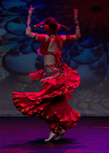
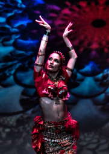
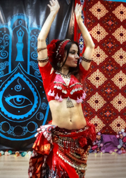
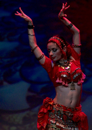
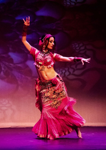
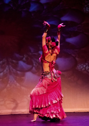
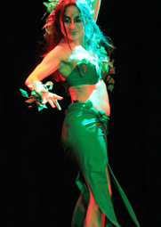
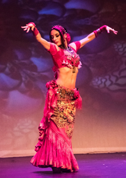
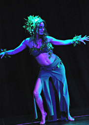
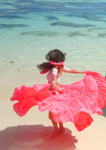
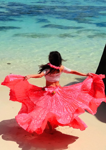
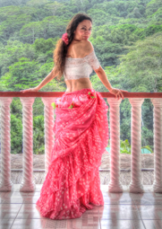
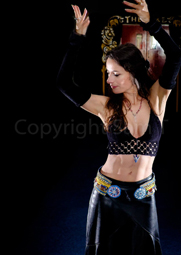
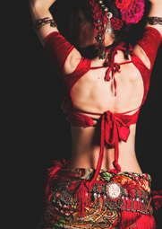
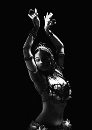
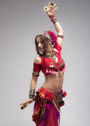
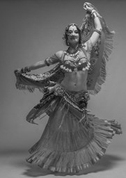
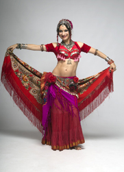
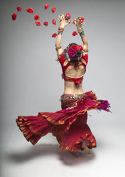
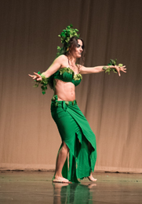
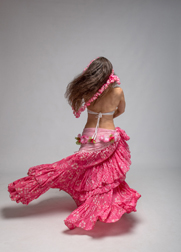
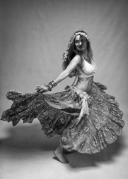
X
>
<
A big thank you to the Photographers : Alexandre Skrzypczak, Dan Fullard, David Hegarty, Ankie Janssen, Sam Toulouse, Urzula Beatrycze Szterner, Eadaoin McCarthy, Pierce Coady
Icons made by Freepik from www.flaticon.com is licensed by CC 3.0 BY